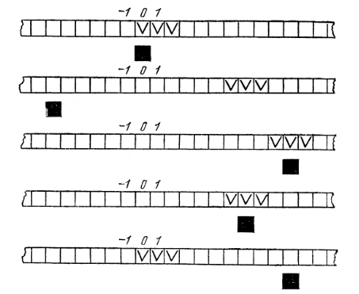
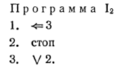
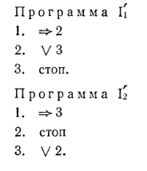

2.2 Прибавление единицы в простейшем случае
Мы начинаем с самого сильного ограничения, налагаемого на взаимное расположение машинной записи числа
Рис.
18
и каретки в
начале, н, тем самым, с наиболее простой задачи. Назовем ее задачей 1.
Задача 1 (длинная
формулировка). Требуется написать программу машины Поста, обладающую следующим
свойством. Каково бы ни было число п, если начальное состояние машины Поста
таково, что на ленте имеется машинная запись числа п (а в остальном лента пуста)
н каретка стоит против самой левой секции записи, то выполнение программы должно
привести к результативной остановке, после чего на ленте (в произвольном ее
месте) должно быть записано число n + 1 (а в остальном лента должна быть пуста),
причем каретка может стоять где угодно. Обозначим через Аn совокупность всех
таких состояний машины Поста, в каждом из которых отмеченными на ленте являются
равно п + 1 секций, а каретка стоит против самой левой из отмеченных секций. На
рис. 15 показано несколько состояний из класса А2; они отличаются друг от друга
лишь различным положением массива и жестко связанной с ним каретки относительно
начала координат.
Обозначим через Е„ совокупность всех таких состояний машины Поста, в каждом из которых отмеченными на ленте являются ровно n + 1 секций, а каретка может стоять где угодно. К Еn относятся все состояния из Аn

Рис. 19
н еще много
других. На рис. 19 показано несколько со= стояний из класса Е2.
Теперь задачу 1
можно сформулировать короче.
Задача 1 (короткая формулировка). Написать такую программу машины Поста, которая для любого n, будучи применена к произвольному состоянию из класса А„, дает результативную остановку в каком-то состоянии из класса Еn+i. Прежде чем приступить к решению задачи 1, заметим, что в ее условии ничего не говорится о том, что должно получаться при применении искомой программы к состояниям, не принадлежащим ни к одному из классов А (n = 0, 1, 2, ...); это значит, что нам безразлично, что будет происходить при таких состояниях, выбираемых в качестве начальных: пас устроит любая программа, переводящая состояния из А„ в состояния из Еn+1, что бы она ни делала с остальными состояниями. Решением задача 1 будет, например, такая программа:
Мы написали
«например», потому что решение задачи 1 не единственно: возможны и другие
программы, удовлетворяющие условиям задачи. Например, такая программа также
будет решением задачи 1:
Однако написанная выше программа
I1 будет самой короткой (точнее, одной
из самых коротких) из программ, удовлетворяющих условиям задачи 1.
Действительно, можно доказать (в мы рекомендуем это сделать читателю), что
никакая программа длины 1 или 2 уже не может служить решением задачи 1; в то же
время есть еще ровно одна программа длины З, также являющаяся решением нашей
задачи; вот эта программа:

Упражнение.
Докажите, что существует бесконечно много программ, являющихся решениями задачи
1.
Совершенно аналогично задаче 1 может быть решена задача 1', отличающаяся от задачи 1 лишь тем, что вначале каретка обозревает самую правую из секций массива. Именно, обозначим через Аn класс всех таких состояний из Е, в которых каретка обозревает самую правую из отмеченных секций. Тогда короткая формулировка задачи 1' будет такова: Задача 1' (короткая формулировка). Написать такую программу машины Поста, которая для любого п, будучи применена к произвольному состоянию из класса А„, дает результативную остановку в каком-то состоянии из класса Еn+i. Следующие две программы будут единственными самыми короткими программами, удовлетворяющими условию задачи 1':
